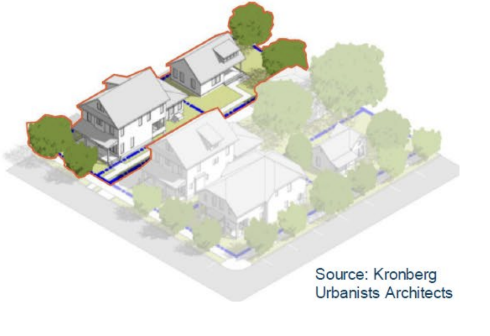

Asheville City Council - February 11th Meeting
February 17, 2025
Here’s what we found to be the most important housing-related items at Asheville’s City Council meeting of Tuesday, February 11, 2025.
Commercial Zoning Amendments
Project Level Thresholds
Outcome: Continued
Votes:
Unanimous in favor (for continuance)
Parking Minimums
Outcome: Continued
Votes:
Unanimous in favor (for continuance)
Commercial Zoning District Updates
Outcome: Continued
Votes:
Unanimous in favor (for continuance)
City Council members decided to delay the commercial zoning reform package that was scheduled to be heard. That hearing is now set for March 11th.
We won’t review those reforms here, but they’re very important. You can read about them in our recap of the city’s January Planning and Zoning Commission meeting.
It appears as though the delay is due to pressure from neighborhood interest groups, who have asserted that they weren’t properly informed about the proposed changes.
While the vote to delay (or “continue,” to use the official language) was unanimous on Tuesday, the actual decision to delay these amendments until March took place at the City Council Agenda Briefing on Thursday, February 6th. These agenda briefings take place five days before each and every council meeting, and they are open for the public to view on the city’s YouTube channel. And for what it’s worth, the discussion around these amendments did reveal some differences between how some of the councilors were thinking.
But rather than recap that meeting too, we’ll simply leave you with our favorite quote from the meeting, courtesy of Councilor Maggie Ullman:
We know that generations of having huge amounts of our zoning for single family has created this really concerning scarcity. So it’s almost like, are we chasing a unicorn? If we don’t want to pursue a supply strategy then let’s just call it. . . . What does this unicorn look like?
Residential Zoning Amendments: Cottage Courts and Flag Lots
Cottage Development Standards
Outcome: Continued
Votes:
In favor (of continuance): Esther E. Manheimer, Maggie Ullman, Sage Turner, Bo Hess
Against: S. Antanette Mosley, Sheneika Smith, Kim Roney
Flag Lot Standards
Outcome: Continued
Votes:
In favor (of continuance): Esther E. Manheimer, Maggie Ullman, Sage Turner, Bo Hess
Against: S. Antanette Mosley, Sheneika Smith, Kim Roney
These zoning amendments, which would effectively allow more single-family homes to be built on smaller lots in high-demand neighborhoods, are a bit unusual in that they are citizen-initiated. (State law allows citizens to propose local zoning code changes and requires that cities hear them when this happens.) These specific amendments have been before the council before, in September 2024, when numerous meeting attendees expressed support for the changes. That night, Council ended up delaying their vote to this week’s meeting.
The agenda for the meeting this week listed the cottage court and flag lot amendment items as consisting of votes only, their public hearings having already taken place. We understood this to mean that there would not be room for in-person comment. But it appears that there was some procedural confusion, and a new round of comments were heard.

Most of these comments consisted of concern around neighborhood change, particularly for historically Black neighborhoods, or “Legacy Neighborhoods.” These concerns coalesce around the desire for a “neighborhood overlay” which would isolate these places from new pro-housing-infill reforms.
How the Voting Went
Each of the two residential code amendments, for cottage court and flag lot reform, respectively, were subject to successful motions for denial, with Councilors Kim Roney, Sheneika Smith, Bo Hess, and Antanette Mosley voting to deny the reforms. Mayor Esther Manheimer and Councilors Sage Turner and Maggie Ullman voted against the motion to deny the reforms.
Notably, prior to the first motion for denial, Councilor Turner did suggest that the council would be able to pass the reforms that night along with some conditions that would keep them from applying to the concerned neighborhoods. That line of procedure was not pursued by the council members that opposed the reforms.
Following a recess after both amendments were denied, Councilor Hess changed his position, and both items were brought back to be voted on again. (If this sounds unusual, it is!) This time, the motion was to “continue,” or postpone the decision until March 11th. Both amendments passed their respective motions to continue, with Mosley, Smith, and Roney again voting in opposition to both.
Concluding Notes
In some ways, we’re back where we started. The March 11th Asheville City Council meeting will again feature all five of the pro-housing-infill reforms that we hoped would be passed on February 11th.
We are frustrated with the pace of progress. Still, we thank the Asheville City Council members that are keeping their eyes on the goal of broad, pro-housing change, change that will both serve as an anti-displacement measure while also creating new options for more affordable housing for ALL kinds of people, including those in vulnerable communities.